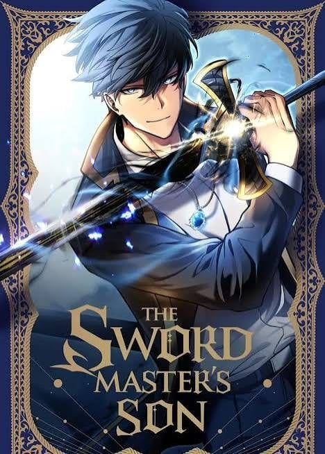

The Swordmaster's Son
Synopsis
A man who died as the weakest of a legendary sword family is reborn as a child, determined to do everything differently.
The Storm Castle
Summary of chapter 1
Jin Runcandel was the weakest child of a legendary family of swordmasters, so his siblings cast him out. He then discovered a gift for magic, earned a contract with a shadow god, and seemed set to become the strongest magic swordsman of his age, but he was killed in his sleep when three powerful knights attacked his kingdom’s capital.
Years later, Jin is a seven-year-old boy back in the family’s remote Storm Castle, with the memories of his earlier life. His two older twin brothers, who bully him, try to harass him again while his nanny is away.
This time Jin is ready. He beats both twins and leaves them out in the rain beside the grave of a bird they killed. A guardian knight reports the incident to the family patriarch, who is amused and decides to visit the castle to see his youngest son for himself.